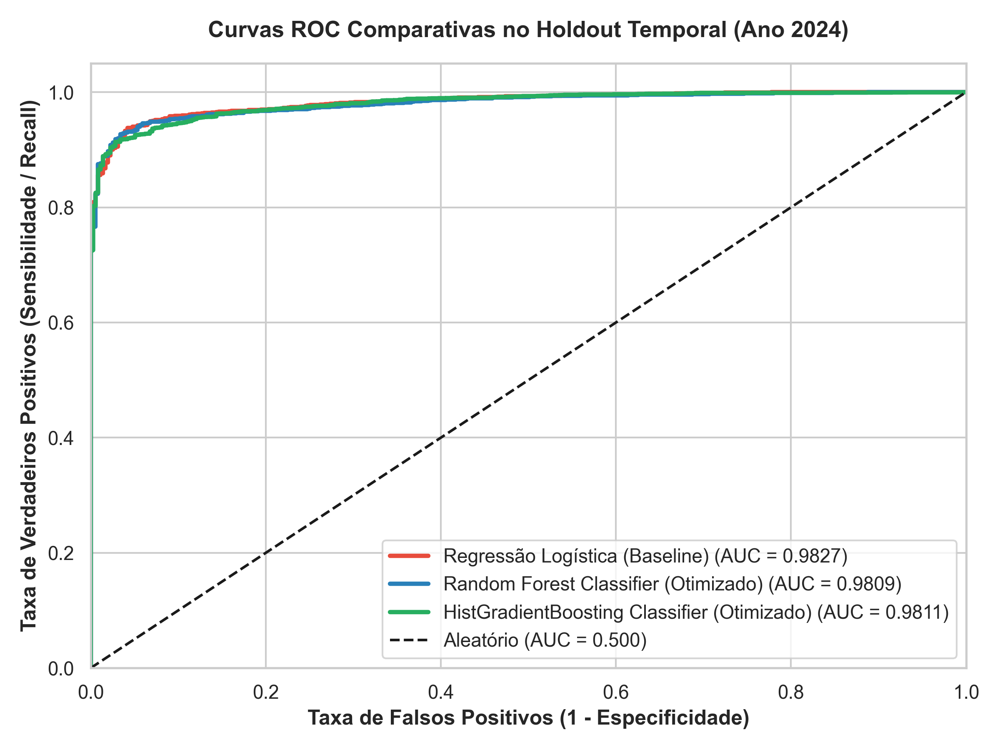
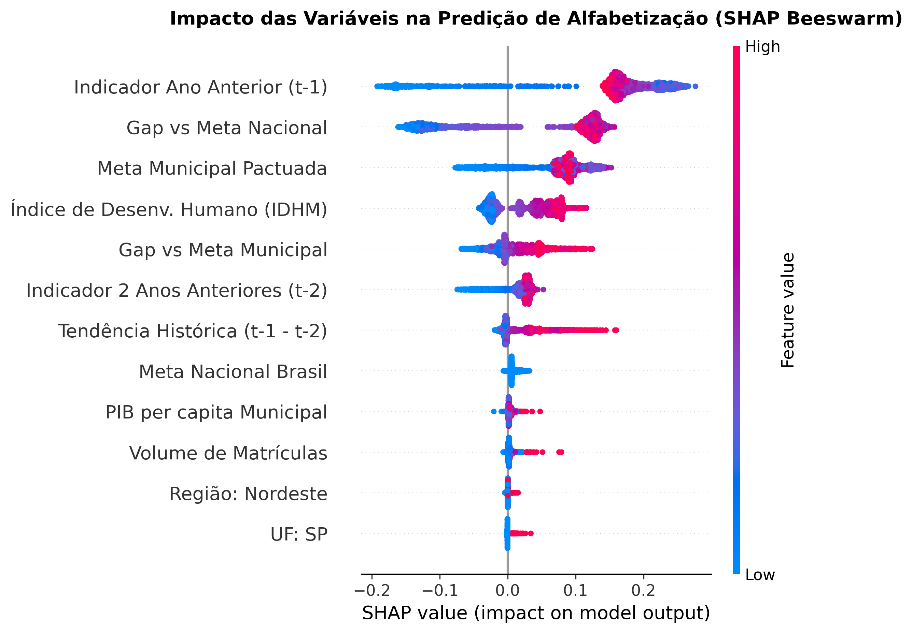
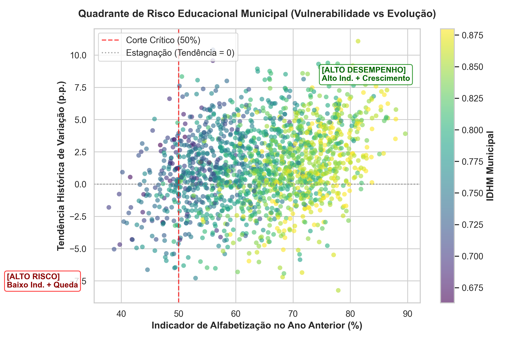

O Compromisso Nacional Criança Alfabetizada estabelece que 100% dos alunos do 2º ano atinjam proficiência (743 pontos SAEB) até 2030.
Acompanhar apenas relatórios históricos consolidados impede ações corretivas ágeis, pois quando o resultado é publicado o ciclo letivo já terminou.
Construção de um Sistema Preditivo de Alerta Precoce para identificar redes municipais em situação de vulnerabilidade.
Garantia de Zero Data Leakage (direto, temporal e de grupo):
ColumnTransformer integrado (Imputação, Scaler e Encoder).StratifiedGroupKFold agrupado por município na validação cruzada.| Modelo | CV Bal Acc | ROC-AUC Teste | Recall Risco (0) | Bal Acc Teste |
|---|---|---|---|---|
| Regressão Logística (🏆) | 0.9221 | 0.9827 | 95.21% | 94.51% |
| Random Forest (Otimizado) | 0.9196 | 0.9809 | 96.06% | 94.49% |
| HistGradientBoosting | 0.9149 | 0.9811 | 92.96% | 93.24% |



Identificação de redes municipais com histórico $< 50\%$ e tendência de queda. Detecção de 4 perfis socioeconômicos via clustering K-Means.
Partição Temporal (2022-2023 treino, 2024 teste), StratifiedGroupKFold e 95.2% de Recall na detecção de risco.
Explicabilidade global e local via SHAP Values (Beeswarm, Bar, Dependence e Waterfall).
Transformação de dados brutos da Camada Gold em inteligência preventiva para o futuro da educação básica.
Repositório Oficial: github.com/gustavoschutt/Tech-Challenge-Fase-3